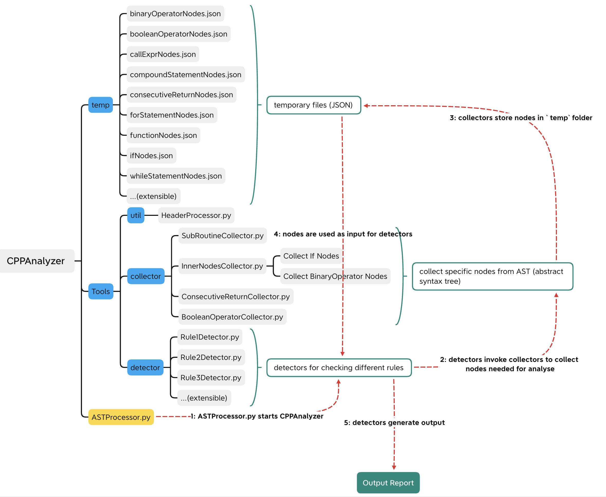

Upon completing my penultimate year of studying for a Bachelor of Computer Science at the University of Adelaide, I was fortunate to be awarded the Adelaide Summer Research Scholarship for the period of 2022-2023. Delving into a 6-week research project, I collaborated with my research partner, Jian Zhe Chan, while being guided by the experienced supervision of Dr. Cruz Izu and Dr. Amali Weerasinghe.
Our research endeavor aimed to facilitate the utilization of code quality feedback tools for novice programmers. The culmination of our efforts resulted in the development of “CPPAnalyzer”, a C++ code quality checker tailored explicitly for novice programmers. This tool serves as a valuable resource to enhance coding style and foster good programming habits among beginners.
In this post, I am delighted to present a comprehensive summary of our research and serve as a documentation guide for using the “CPPAnalyzer” code quality checker. Our hope is that this tool will be a stepping stone for aspiring programmers to sharpen their skills and embark on a journey of coding excellence.
Research Topic
- Facilitate the use of code quality feedback tools for novice programmers
Supervisors
- Dr Cruz Izu
- Lecturer
- School of Computer and Mathematical Sciences, Faculty of Sciences, Engineering and Technology
- Research Interests: Computer System Architecture, Higher Education, Networking and Communications, Teacher Education and Professional Development of Educators
- Dr Amali Weerasinghe
- School of Computer and Mathematical Sciences, Faculty of Sciences, Engineering and Technology
- Research Interests: Artificial Intelligence
Student Researchers
- Jiajun Yu (Jason)
- Bachelor of Computer Science
- Interests: Computer Systems, Computer Architecture, Algorithms, Data Structures
- Email: jiajun.yu@student.adelaide.edu.au
- Blog: https://jiajun2001.github.io/
- Jian Zhe Chan (JZ)
- Bachelor of Computer Science
- Interests: System Programming, Competitive Programming, Computer Networks and Applications, Parallel and Distributed Systems
- Email: jianzhe.chan@student.adelaide.edu.au
- Blog: https://chan-jz.github.io/
Summer Research Outcome
- Familiarized with the use and features of two code quality checking tools.
- Used BASH scripts and Python programs to analyze two code quality checking tools (Pylint and Hyperstyle) outputs generated from codes submitted by students (Jupyter Notebook, Python, Java files), and used excel to visualize the data.
- Developed a tool to filter Pylint error codes in groups for teaching and researching purposes.
- Developed a tool (CPPAnalyzer) to pick up code smells that are missed by existing code quality checking tools
About CPPAnalyzer
- CPPAnalyzer is a code quality checking tool that is developed by Jiajun Yu and Jian Zhe Chan under the supervison of Dr Cruz Izu and Dr Amali Weerasinghe during the summer of 2022-2023. It is aimed to analyze the code quality of C++ programs submitted by novice programmers and detect or pick up details missed by existing tools to help students have good coding styles and habits.
- Originally, CPPAnalyzer was planned and desigend to detect 10 rules (FYI: Summer-Research/CPPAnalyzer/Refactor_patterns.pdf). However, due to the time constraint and other unexpected situations, JZ and me only finished implementing 6 rules, they were:
- Refactor Rule 1: Simplify Boolean Expression
- Refactor Rule 2: Simplify Boolean Return
- Refactor Rule 3: Collapsible Nested if Statement
- Refactor Rule 8: Empty if Statement
- Refactor Rule 9: Dead Code
- And the rest unimplemented refactor rules are:
- Refactor Rule 4: Consolidate Conditional Expressions
- Refactor Rule 5: Redundant Conditional Check
- Refactor Rule 6: No Use of Else
- Refactor Rule 7: Duplicate if-else Body
- In general, CPPAnalyzer is written in Python and it detects broken rules by checking all related nodes (if nodes, while nodes, for nodes, etc). We collect those nodes in JSON format which come from the abstract syntax trees of authentic student submissions generated by clang compiler.
Let’s run CPPAnalyzer
-
- Clone this github repository using the following command
-
1git clone --recursive https://github.com/jiajun2001/Summer-Research.git
-
- Go to
CPPAnalyzerusing the following command
-
1cd CPPAnalyzer
- Go to
- 3: We have provided you with some test cases in the
CPPAnalyzerfolder- Examples: test_Rule3.cpp, test_Rule8.cpp, test_Rule9.cpp, test_Rule123.cpp
- 4: If you want to play around with them, firstly open
ASTProcessor.pyfile. This is the entry point of our CPPAnalyzer. - 5: Modify line 9 to specify your input file (by default, the input C++ file for testing is
test_Rule123.cpp)fileName = "test_Rule123.cpp"
- 6: Now we can run the program by simply entering the following command:
-
1python ASTProcessor.py
-
- 7: If this command does not work, try this command:
-
1python3 ASTProcessor.py - If this still does not work, you can check your environment to see if you have properly installed Python or not.
-
- 8: Have great fun! If you follow the steps above correctly, you should technically see something like this in your terminal:
-
1 2 3 4 5 6 7 8 9 10(base) apple@student-10-201-17-110 CPPAnalyzer % python3 ASTProcessor.py test_Rule123.cpp:13:9: RRE001: No need to check if Boolean variable or expression is equal to true or false (Simplify Boolean Expression) test_Rule123.cpp:19:12: RRE001: No need to check if Boolean variable or expression is equal to true or false (Simplify Boolean Expression) test_Rule123.cpp:19:27: RRE001: No need to check if Boolean variable or expression is equal to true or false (Simplify Boolean Expression) test_Rule123.cpp:20:19: RRE001: No need to check if Boolean variable or expression is equal to true or false (Simplify Boolean Expression) test_Rule123.cpp:20:35: RRE001: No need to check if Boolean variable or expression is equal to true or false (Simplify Boolean Expression) test_Rule123.cpp:20:51: RRE001: No need to check if Boolean variable or expression is equal to true or false (Simplify Boolean Expression) test_Rule123.cpp:13:5: RRE003: Avoiding deep nested ifs by using and (&&) operator test_Rule123.cpp:21:13: RRE009A: Detected code that is never executed below the current return/continue/return statement (base) apple@student-10-201-17-110 CPPAnalyzer %
-
How does this work?
-
This is the structure of CPPAnalyzer: 
-
Workflow of CPPAnalyzer
-
ASTProcessor.pyis the entry point of CPPAnalyzer. This file allows you to specify your input file (C++ program that you are going to analyze), and contains other collectors and rule detectors. If you are going to extend CPPAnalyzer, you should include and invoke your rule detectors in this file.
- In this file, we will also invoke a module called
HeaderPreprocessorbefore calling collectors and rule detectors. When we are generating the AST (abstract syntax tree), we do not want the tree to include any libraries. Otherwise, the tree structure will be giant and messy and this does not help us analyze the code structure. Therefore, we used this module to disable any library that the author of the program included before. The idea here is by putting a line of mark codeint XX_MARKER_XX;to indicate where should we start collecting useful subroutine(function) nodes.
-
- Under
Toolsfolder, we have a folder for collectors and another folder for detectors.
- Technically, at first, we would invoke detectors in consecutive order (Rule1Detector -> Rule2Detector -> Rule3Detector…)
- For each rule detector, it will invoke collectors to collect JSON nodes needed from the AST (abstract syntax tree) and store those JSON nodes in
tempfolder.- For your reference, if you want to have a look at the AST generated, you could use the following command to dump one in
tempfolder. -
1clang -Xclang -ast-dump=json -fsyntax-only -fno-color-diagnostics test_Rule123.cpp > temp/output.json
- For your reference, if you want to have a look at the AST generated, you could use the following command to dump one in
- After obtaining all nodes we need for detecting one rule, we could start coding the main logic for checking if the node breaks the rule or not.
- The general ideas here is to run a for loop to check each relative node that we collected before.
- Since code structure can sometimes be nested, so we used a few recursive functions (DFS and BFS) to analyze a single node.
- Under
-
Genuine Advice
- Try to let the program run first and play around with it by changing the input code to see what will the terminal generate.
- When you are extending this project, try to use some very simple test cases and see the structures of the AST (abstract syntax tree) generated and nodes colleted by collectors.
- It is important to be familiar with the JSON files generated. You could use some online JSON parsers to visualize the structure.
- Consolidate your knowledge about tree data structure and tree traversal algorithms. Knowing these knowledge is of vital importance for further developing the project.
- We might be wrong in some stages of programming this CPPAnalyzer, so feel free to apply your own ideas and change some existing code.
- Good luck!